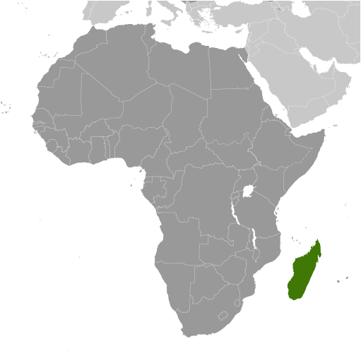
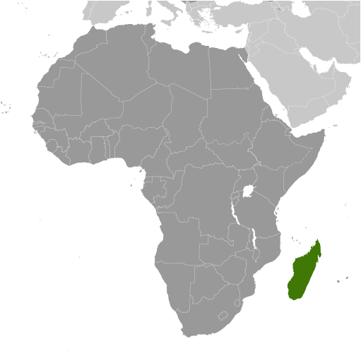

country name
- conventional long form: Republic of Madagascar
- conventional short form: Madagascar
- local long form: Republique de Madagascar/Repoblikan'i Madagasikara
- local short form: Madagascar/Madagasikara
- former: Malagasy Republic
- etymology: the name "Madageiscar" was first used by the 13th-century Venetian explorer
Marco POLO, as a corrupted transliteration of Mogadishu, the Somali port with which
POLO confused the island
government type
semi-presidential republic
capital
- name: Antananarivo
- geographic coordinates: 18 55 S, 47 31 E
- time difference: UTC+3 (8 hours ahead of Washington, DC, during Standard Time)
- etymology: the name, which means "City of the Thousand," was bestowed by 17th century
King Adrianjakaking to honor the soldiers assigned to guard the city
administrative divisions
6 provinces (faritany); Antananarivo, Antsiranana, Fianarantsoa, Mahajanga, Toamasina,
Toliara
independence
26 June 1960 (from France)
national holiday
Independence Day, 26 June (1960)
constitution
- history: previous 1992; latest passed by referendum 17 November 2010, promulgated
11 December 2010
- amendments: proposed by the president of the republic in consultation with the cabinet
or supported by a least two thirds of both the Senate and National Assembly membership;
passage requires at least three-fourths approval of both the Senate and National Assembly
and approval in a referendum; constitutional articles, including the form and powers
of government, the sovereignty of the state, and the autonomy of Madagascar’s collectivities,
cannot be amended (2017)
legal system
civil law system based on the old French civil code and customary law in matters of
marriage, family, and obligation
international law organization participation
accepts compulsory ICJ jurisdiction with reservations; accepts ICCt jurisdiction
citizenship
- citizenship by birth: no
- citizenship by descent only: the father must be a citizen of Madagascar; in the case
of a child born out of wedlock, the mother must be a citizen
- dual citizenship recognized: no
- residency requirement for naturalization: unknown
suffrage
18 years of age; universal
executive branch
- chief of state: President Andry RAJOELINA (since 21 January 2019) (2019)
- head of government: Prime Minister Christian NTSAY (since 6 June 2018 and re-appointed 19
July 2019)
- cabinet: Council of Ministers appointed by the prime minister
- elections/appointments: president directly elected by absolute majority popular vote
in 2 rounds if needed for a 5-year term (eligible for a second term); election last
held on 7 November and 19 December 2018 (next to be held in 2023); prime minister
nominated by the National Assembly, appointed by the president
- election results: Andry RAJOELINA elected President in second round; percent of vote
- Andry RAJOELINA (TGV) 55.7%, Marc RAVALOMANANA 44.3% (TIM)
legislative branch
- description: bicameral Parliament consists of: Senate or Antenimieran-Doholona (reestablished
on 22 January 2016, following the December 2015 senatorial election) (63 seats; 42
members indirectly elected by an electoral college of municipal, communal, regional,
and provincial leaders and 21 appointed by the president of the republic; members
serve 5-year terms) National Assembly or Antenimierampirenena (151 seats; 87 members
directly elected in single-seat constituencies by simple majority vote and 64 directly
elected in multi-seat constituencies by closed-list proportional representation vote;
members serve 5-year terms)
- elections: Senate - last held 29 December 2015 (next to be held in 2021) National
Assembly - last held on 27 May 2019
- election results: Senate - percent of vote by party - NA; seats by party - HVM 34,
TIM 3, MAPAR 2, LEADER-Fanilo 1, independent 2, appointed by the president 21; composition
- men 51, women 12, percent of women 19% National Assembly - percent of vote by party
-Independent Pro-HVM 18%, MAPAR 17%, MAPAR pro-HVM 16%, VPM-MMM 10%, VERTS 3%, LEADER
FANILO 3%, HIARAKA ISIKA 3%, GPS/ARD 7%, INDEPENDENT 9%, TAMBATRA 1%, TIM 13%; composition
- men 120, women 31, percent of women 20.5%; note - total National Assembly percent
of women 20.1%
judicial branch
- highest courts: Supreme Court or Cour Supreme (consists of 11 members; addresses judicial
administration issues only); High Constitutional Court or Haute Cour Constitutionnelle
(consists of 9 members); note - the judiciary includes a High Court of Justice responsible
for adjudicating crimes and misdemeanors by government officials, including the president
- judge selection and term of office: Supreme Court heads elected by the president and
judiciary officials to serve 3-year, single renewable terms; High Constitutional Court
members appointed - 3 each by the president, by both legislative bodies, and by the
Council of Magistrates; members serve single, 7-year terms
- subordinate courts: Courts of Appeal; Courts of First Instance
political parties and leaders
Economic liberalism and democratic action for national recovery or LEADER FANILO [Jean
Max RAKOTOMAMONJY] FOMBA [Ny Rado RAFALIMANANA] Gideons fighting against poverty in Madagascar
(Gedeona Miady amin'ny Fahantrana eto Madagascar) or GFFM [Andre Christian Dieu Donne
MAILHOL] Green party or VERTS (Antoko Maintso) [Alexandre GEORGET] I Love Madagascar
(Tiako I Madagasikara) or TIM [Marc RAVALOMANANA] Malagasy aware (Malagasy Tonga Saina)
or MTS [Roland RATSIRAKA] Malagasy raising together (Malagasy Miara-Miainga) or MMM
[Hajo ANDRIANAINARIVELO] New Force for Madagascar (Hery Vaovao ho an'ny Madagasikara)
or HVM [Hery Martial RAJAONARIMAMPIANINA Rakotoarimanana] Total Refoundation of Madagascar
(Refondation Totale de Madagascar) or RTM [Joseph Martin RANDRIAMAMPIONONA] Vanguard
for the renovation of Madagascar (Avant-Garde pour la renovation de Madagascar) or
AREMA [Didier RATSIRAKA] Young Malagasies Determined (Malagasy: Tanora malaGasy Vonona)
or TGV [Andry RAJOELINA]and MAPAR [Andry RAJOELINA], and IRD (We are all with Andy
Rajoelina) [Andry RAJOELINA]
international organization participation
ACP, AfDB, AU, CD, COMESA, EITI (candidate country), FAO, G-77, IAEA, IBRD, ICAO,
ICC (NGOs), ICCt, ICRM, IDA, IFAD, IFC, IFRCS, ILO, IMF, IMO, InOC, Interpol, IOC,
IOM, IPU, ISO (correspondent), ITSO, ITU, ITUC (NGOs), MIGA, NAM, OIF, OPCW, PCA,
SADC, UN, UNCTAD, UNESCO, UNHCR, UNIDO, UNWTO, UPU, WCO, WFTU (NGOs), WHO, WIPO, WMO,
WTO
diplomatic representation in the us
- (vacant)
- chancery: 2374 Massachusetts Avenue NW, Washington, DC 20008
- telephone: [1] (202) 265-5525
- FAX: [1] (202) 265-3034
- consulate(s) general: New York
diplomatic representation from the us
- chief of mission: Ambassador Michael PELLETIER (since 14 February 2019)
- telephone: [261] 20 23 480 00
- embassy: Lot 207A, Point Liberty, Andranoro, Antehiroka, 105 Antananarivo
- mailing address: B.P. 620, Antsahavola, Antananarivo
- FAX: [261] 20 23 480 35 or [261] 33 44 328 17
flag description
two equal horizontal bands of red (top) and green with a vertical white band of the
same width on hoist side; by tradition, red stands for sovereignty, green for hope,
white for purity
national symbol s
traveller's palm, zebu; national colors: red, green, white
national anthem
- name: "Ry Tanindraza nay malala o" (Oh, Our Beloved Fatherland)
- lyrics/music: Pasteur RAHAJASON/Norbert RAHARISOA
- note: adopted 1959

 
